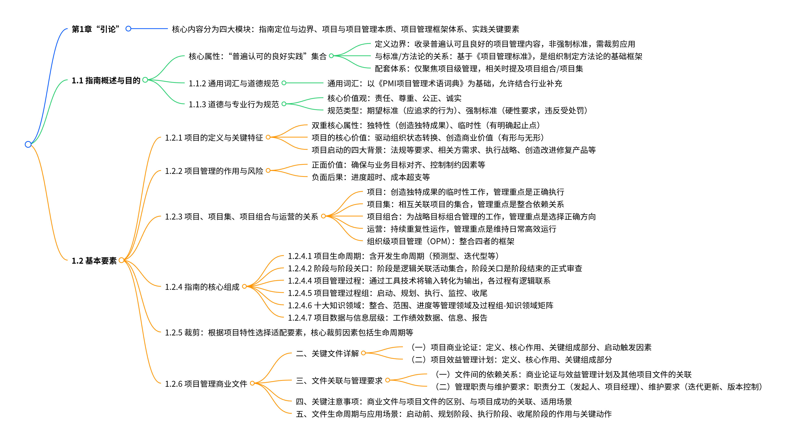

第1章“引论”
第1章作为《PMBOK®指南》的基础章节，系统界定了项目管理的核心概念、框架体系与实践逻辑，为后续知识领域的展开奠定基础，核心内容可分为“指南定位与边界”“项目与项目管理本质”“项目管理框架体系”“实践关键要素”四大模块，具体如下：

1.1 指南概述与目的：明确《PMBOK®指南》的定位与价值
核心属性：“普遍认可的良好实践”集合
- 定义边界：收录项目管理领域中“普遍认可”（大多数项目适用、价值与有效性获共识）且“良好实践”（运用相关知识/技能/工具能提升项目成功概率）的内容，非强制标准，需结合项目实际“裁剪”应用。
- 与标准/方法论的关系：
- 基于《项目管理标准》（ANSI认证，指南第二部分）：标准明确“良好实践”的核心过程及输入输出，不强制特定实践；
- 区别于方法论：指南是组织制定项目管理方法论（如敏捷Scrum、瀑布式）的“基础框架”，而非方法论本身（方法论是具体的实践/技术体系）。
- 配套体系：PMI同步发布《项目组合管理标准》《项目集管理标准》，本指南仅聚焦“项目级”管理，仅在与项目直接相关时提及项目组合/项目集。
1.1.2 通用词汇与道德规范：统一语言与职业准则
- 通用词汇：以《PMI项目管理术语词典》为基础，提供项目管理领域的统一术语（如“可交付成果”“里程碑”），同时允许项目结合行业特性补充特定术语，确保相关方沟通一致。
1.1.3 道德与专业行为规范
-
核心价值观：责任、尊重、公正、诚实（全球项目管理业界公认的核心准则）；
-
规范类型：
- 期望标准：从业者应追求的行为（如主动提升专业能力）；
- 强制标准：硬性要求（如禁止利益冲突），违反将受PMI纪律处罚（如证书吊销）。
1.2 基本要素：项目与项目管理的本质的核心概念
1.2.1 项目的定义与关键特征
- 双重核心属性：
- 独特性：为创造“独特的产品/服务/成果”（如不同建筑项目的位置/设计差异、定制软件的功能差异），即使存在重复元素（如相同施工流程），整体仍具唯一性；
- 临时性：有明确起点与终点，终点触发场景包括“目标达成”“资源中断（如资金耗尽）”“需求消失（如政策变更）”“无法达成目标”等，“临时性”不代表持续时间短（如大型基建项目可能持续数年）。
- 项目的核心价值：
- 驱动组织“状态转换”：推动组织从“当前状态”向“将来状态”转变（如新产品研发帮助企业从“传统业务”向“新兴业务”转型）；
- 创造商业价值：包括有形价值（货币资产、市场份额、固定资产）与无形价值（品牌认知、战略一致性、公共利益）。
-
项目启动的四大背景：所有项目均源于特定触发因素，具体如下：
触发因素类别 核心场景示例 法规､法律或社会要求 环保法规驱动的工厂污染治理项目、公共卫生事件触发的防疫设施建设 相关方的要求或需求 客户定制的企业ERP系统开发、内部员工提出的办公流程优化需求 执行、变更业务或技术战略 企业数字化转型的云平台建设、新技术（如AI）应用的试点项目 创造、改进或修复产品、过程或服务 现有APP的用户体验优化、传统产品的功能升级（如手机摄像头迭代）
1.2.2 项目管理的作用与风险
- 项目管理的正面价值：通过“应用知识/技能/工具/技术”实现项目目标，核心作用包括：
- 确保项目与业务目标对齐（如满足客户需求、支撑组织战略）；
- 控制制约因素（平衡范围/进度/成本/质量等相互竞争的目标）；
- 提升可预测性（减少返工、避免范围蔓延）；
- 优化资源使用（避免资源浪费、协调跨部门资源）；
- 管理变更与风险（及时应对偏差、降低失败概率）。
-
缺乏项目管理的负面后果：
- 进度超时、成本超支、质量低劣（如产品缺陷率高）；
- 范围蔓延（未受控的需求增加）、相关方冲突（如客户与团队期望不一致）；
- 组织声誉受损（如产品交付失败导致客户流失）、项目终止（如无法达成目标或资源断裂）。
1.2.3 项目、项目集、项目组合与运营的关系：明确层级与定位
四者均为组织实现战略目标的手段，但在定义、管理重点、目标上存在显著差异，具体对比如下：
| 类别 | 核心定义 | 管理重点 | 关键目标 | 示例 |
|---|---|---|---|---|
| 项目 | 为创造独特成果的临时性工作（某个方向的一支） | 以“正确的方式”执行项目，按计划交付可交付成果 | 达成具体、短期的成果目标（如某款新品研发、单次活动执行） | 某电商平台的“618促销活动技术支持项目” |
| 项目集 | 相互关联的项目/子项目集的集合，需协调管理以获取协同效益（某个方向） | 整合依赖关系（如资源共享、成果互补），避免单独管理的低效/冲突 | 实现“单独管理无法获得的整体效益”（如跨项目风险共防、成果协同交付） | 通信卫星系统项目集（含卫星设计、发射、地面站建设、用户培训等子项目） |
| 项目组合 | 为实现战略目标，组合管理的项目/项目集/运营工作（选择正确的方向） | 选择“正确的”项目集/项目，按战略优先级分配资源（如淘汰低价值项目） | 支撑组织长期战略（如降本增效、市场扩张），实现整体投资回报最大化 | 某基建公司的“新能源业务项目组合”（含风电项目、光伏项目、储能项目） |
| 运营 | 持续的、重复性的产品生产/服务运作（非临时性） | 维持日常业务高效运行，优化流程、降低成本 | 稳定输出产品/服务，保障组织持续运营（如产品售后、设备维护） | 电商平台上线后的日常运维（服务器监控、用户客服） |
- 组织级项目管理（OPM）：整合四者的框架，通过统一的治理、流程与资源分配，确保项目/项目集/项目组合与组织战略一致，如通过OPM将各项目成果与企业“数字化转型”战略对齐。

1.2.4 指南的核心组成：构建系统化管理逻辑
1.2.4.1 项目生命周期：项目从启动到完成的阶段集合
开发生命周期类型
项目生命周期内通常有一个或多个阶段与产品、服务或成果的开发相关，这些阶段称为开发生命周期。
根据项目特性选择适配模式，核心类型及适用场景如下：
| 生命周期类型 | 核心特点 | 适用场景 |
|---|---|---|
| 预测型（瀑布式） | 早期明确范围/进度/成本，变更需严格控制 | 需求稳定、技术成熟（如建筑项目、标准化产品生产） |
| 迭代型 | 范围固定，进度/成本随迭代渐进明细（如每轮迭代优化计划） | 需求明确但细节需逐步验证（如软件原型开发） |
| 增量型 | 渐进交付可交付成果（如分阶段上线功能），早期可获取部分价值 | 需快速交付核心功能（如紧急上线的应急系统） |
| 适应型（敏捷） | 范围灵活调整，通过短迭代（如2周冲刺）响应变更 | 需求多变、不确定性高（如创新产品研发、互联网项目） |
| 混合型 | 结合预测与适应（如核心功能用预测，次要功能用敏捷） | 部分需求明确、部分需求多变（如传统企业的数字化改造） |
1.2.4.2 阶段与阶段关口
- 阶段：逻辑关联的活动集合（如“需求分析→设计→开发→测试”），每个阶段以“可交付成果完成”为标志；
- 阶段关口（审查点）：阶段结束时的正式审查，对比商业论证/项目章程/管理计划，决定“继续进入下一阶段”“整改后继续”或“终止项目”（如项目中期审查、上线前审查）。
1.2.4.4 项项目管理过程：项目管理活动
是项目生命周期的核心，通过合适的工具和技术将输入转化为可交付成果或结果，且各过程通过输出建立逻辑联系，输出可作为其他过程的输入或项目可交付成果。
过程迭代次数和相互作用因项目需求而异，通常分为仅开展一次或在预定义点开展、定期开展、贯穿项目始终执行三类。
1.2.4.5 项目管理过程组：按逻辑分组的管理活动
将项目管理活动分为五大过程组，贯穿项目全生命周期，具体如下：
| 过程组 | 核心定义 | 关键活动示例 | 开展频率 |
|---|---|---|---|
| 启动过程组 | 定义项目/阶段，授权项目启动 | 制定项目章程（正式批准项目）、识别相关方 | 仅开展1次（项目启动）或在预定义点（阶段启动） |
| 规划过程组 | 明确项目范围/目标，制定行动方案 | 规划范围管理、收集需求、制定进度计划/成本预算 | 主要在项目早期开展，随项目进展补充细化（如滚动式规划） |
| 执行过程组 | 完成计划中的工作，实施批准的变更 | 指导与管理项目工作、建设团队、管理沟通 | 贯穿项目全生命周期，持续开展 |
| 监控过程组 | 跟踪项目进度，识别偏差并纠正 | 监控项目工作、控制范围/进度/成本、实施整体变更控制 | 贯穿项目全生命周期，持续开展 |
| 收尾过程组 | 正式结束项目/阶段，移交成果并归档 | 验收可交付成果、整理经验教训、关闭合同 | 仅开展1次（项目收尾）或在预定义点（阶段收尾） |
1.2.4.6 十大知识领域：按知识内容划分的管理领域
根据项目管理的知识模块，分为十大领域，每个领域包含对应过程，与过程组共同构成“过程组-知识领域矩阵”（见表1-4），核心领域及核心目标如下：
- 项目整合管理：整合各领域过程，平衡资源与变更；
- 项目范围管理：确保项目“做且只做所需工作”；
- 项目进度管理：确保项目按时完成；
- 项目成本管理：确保项目在预算内完成；
- 项目质量管理：确保成果符合质量要求；
- 项目资源管理：获取/管理所需资源；
- 项目沟通管理：确保信息及时/恰当传递；
- 项目风险管理：识别/分析/应对项目风险；
- 项目采购管理：管理外部采购与合同；
- 项目相关方管理：识别/协调相关方需求与参与。
过程组-知识领域矩阵：展示过程组与知识领域的对应关系，帮助项目团队选择合适的过程组，确保知识的有效应用。
| 知识领域 | 启动过程组 | 规划过程组 | 执行过程组 | 监控过程组 | 收尾过程组 |
|---|---|---|---|---|---|
| 4. 项目整合管理 | 4.1 制定项目章程 | 4.2 制定项目管理计划 | 4.3 指导与管理项目工作 4.4 管理项目知识 |
4.5 监控项目工作 4.6 实施整体变更控制 |
4.7 结束项目或阶段 |
| 5. 项目范围管理 | 5.1 规划范围管理 5.2 收集需求 5.3 定义范围 5.4 创建 WBS |
5.5 确认范围 5.6 控制范围 |
|||
| 6. 项目进度管理 | 6.1 规划进度管理 6.2 定义活动 6.3 排列活动顺序 6.4 估算活动持续时间 6.5 制定进度计划 |
6.6 控制进度 | |||
| 7. 项目成本管理 | 7.1 规划成本管理 7.2 估算成本 7.3 制定预算 |
7.4 控制成本 | |||
| 8. 项目质量管理 | 8.1 规划质量管理 | 8.2 管理质量 | 8.3 控制质量 | ||
| 9. 项目资源管理 | 9.1 规划资源管理 9.2 估算活动资源 |
9.3 获取资源 9.4 建设团队 9.5 管理团队 |
9.6 控制资源 | ||
| 10. 项目沟通管理 | 10.1 规划沟通管理 | 10.2 管理沟通 | 10.3 监督沟通 | ||
| 11. 项目风险管理 | 11.1 规划风险管理 11.2 识别风险 11.3 实施定性风险分析 11.4 实施定量风险分析 11.5 规划风险应对 |
11.6 实施风险应对 | 11.7 监督风险 | ||
| 12. 项目采购管理 | 12.1 规划采购管理 | 12.2 实施采购 | 12.3 控制采购 | ||
| 13. 项目相关方管理 | 13.1 识别相关方 | 13.2 规划相关方参与 | 13.3 管理相关方参与 | 13.4 监督相关方参与 |
1.2.4.7 项目数据与信息层级：从原始数据到决策支持
项目管理中需区分“数据-信息-报告”三个层级，形成完整的信息流： - 工作绩效数据：原始观察结果（未加工），如“已完成工作百分比”“实际花费成本”“缺陷数量”； - 工作绩效信息：对数据的分析与解读（带背景），如“进度偏差-2周”“成本超支率10%”“缺陷率高于基准5%”； - 工作绩效报告：对信息的汇编与呈现（供决策），如“项目状态报告”“进度仪表盘”“风险预警报告”，用于向相关方传递项目状态、支撑变更决策。

1.2.5 裁剪：适配项目独特性的核心逻辑
-
裁剪定义：根据项目特性（如规模、复杂度、行业、生命周期类型），选择适配的“过程、输入、工具、技术、输出”，避免“一刀切”的管理模式。
-
核心裁剪因素：
- 项目生命周期与开发方法（如敏捷项目无需详细的早期进度计划）；
- 需求稳定性（需求多变需简化规划、增加变更频率）；
- 资源可用性（资源有限需优化资源分配过程）；
- 治理要求（如严格合规项目需增加审计过程）；
- 相关方参与度（相关方分散需强化沟通过程）。
1.2.6 项目管理商业文件：启动与评估项目的核心依据
聚焦“项目管理商业文件”，明确此类文件是项目启动与执行的核心依据，需在项目全生命周期中持续维护并确保与项目目标一致。核心文件包括项目商业论证与项目效益管理计划，二者相互依赖、共同支撑项目决策，同时关联项目章程、项目管理计划等关键文件，形成项目管理的商业逻辑闭环。
二、关键文件详解
（一）项目商业论证
- 定义
文档化的经济可行性研究报告，用于论证所选方案的收益有效性，是启动项目管理活动的核心依据，需在项目启动前完成，且在生命周期内定期审查。 - 核心作用
- 明确项目启动的目标与理由，作为项目结束时衡量成功与否的基准（如对比目标与实际成果）。
- 为项目决策提供经济合理性支撑，回答“为何启动项目”“项目是否值得投资”等核心问题。
- 关键组成部分
| 组成模块 | 核心内容 | |----------|----------| | 业务需要 | 记录待解决的业务问题/机会（如市场需求、政策要求）、受影响的相关方、项目范围边界 | | 形势分析 | 分析组织战略与目标、问题根本原因、现有能力与需求的差距、已知风险、成功关键因素，以及可选方案（含“不采取行动”“最小努力”“超额努力”三类场景） | | 推荐方案 | 说明推荐方案的分析结果、制约因素/假设/风险、成功标准，以及实施方法（如里程碑、角色职责） | | 评估计划 | 描述衡量项目效益的方法，包括短期/长期效益的跟踪方式，以及项目移交后的运营层面方案 | - 启动触发因素
包括市场需求（如低油耗车型研发）、组织需要（如成本优化）、客户要求（如新建变电站）、技术进步（如电子机票替代纸质机票）、法律要求（如环保合规）、社会需要（如公共卫生项目）等。
（二）项目效益管理计划
- 定义
书面文件，明确项目效益的创造、提高与保持过程，聚焦“项目如何产生价值”，需在项目早期制定并随项目进展迭代更新。 - 核心作用
- 确保项目效益与组织战略一致，避免项目偏离商业目标。
- 提供效益测量的具体方法，使“无形效益”（如品牌认知）与“有形效益”（如成本节约）可量化、可跟踪。
- 关键组成部分
- 目标效益：包括有形价值（如净现值、市场份额）与无形价值（如商誉、战略一致性），需明确具体衡量指标（如“成本降低15%”“客户满意度提升至90%”）。
- 战略一致性：说明项目效益与组织业务战略的匹配程度（如支撑“开拓新兴市场”战略）。
- 效益时限：划分阶段效益（如项目中期成果）、短期效益（项目结束后1年内）、长期效益（1年以上）、持续效益（运营阶段），明确各阶段的效益责任人。
- 测量指标：直接指标（如销售额增长）与间接指标（如员工效率提升），需可量化、可验证。
- 假设与风险：记录影响效益实现的假设条件（如市场稳定）、潜在风险（如供应链延迟导致效益滞后）。
三、文件关联与管理要求
（一）文件间的依赖关系
- 商业论证与效益管理计划
- 商业论证提供“为何做项目”的经济依据，效益管理计划提供“如何实现效益”的操作路径，二者需同步更新（如商业论证调整后，效益测量指标需相应修改）。
- 与其他项目文件的关联
- 项目章程：商业论证中的核心目标（如收益指标）需纳入项目章程，作为项目正式启动的依据。
- 项目管理计划：效益管理计划中的测量方法需融入项目管理计划（如进度计划需匹配效益跟踪节点）。
- 需求评估：需求评估结果（如业务痛点分析）需在商业论证中总结，作为业务需要的支撑依据。
（二）管理职责与维护要求
- 职责分工
- 项目发起人：负责商业论证的制定与维护，确保其符合组织战略。
- 项目经理：负责提供专业建议，确保商业论证、效益管理计划与项目章程、项目管理计划的成功标准一致，同时协调与项目集/项目组合层面文件的一致性（如与项目集商业论证对齐）。
- 维护要求
- 迭代更新：随项目进展（如范围变更、外部环境变化）定期修订文件内容（如市场波动导致效益目标调整）。
- 版本控制：作为组织过程资产的一部分，需记录修改历史，确保追溯性。
四、关键注意事项
- 商业文件与项目文件的区别
商业文件（如商业论证）由发起人主导制定，项目经理仅可提出建议，不可直接修改；项目文件（如项目管理计划）由项目团队制定，可通过变更控制流程调整。 - 与项目成功的关联
项目成功不仅需满足范围/进度/成本目标，更需达成商业论证中的效益目标（如投资回报率、市场份额提升），若商业环境变化导致效益无法实现，需重新评估项目可行性。 - 适用场景
适用于所有项目类型，尤其对大型项目、战略级项目（如基础设施建设、新技术研发）至关重要，小型项目可简化形式，但需保留核心逻辑（如简要的成本效益分析）。
五、文件生命周期与应用场景
| 项目阶段 | 商业文件的作用 | 关键动作 |
|---|---|---|
| 启动前 | 论证项目可行性，支撑项目审批 | 完成商业论证编制，获得管理层批准 |
| 规划阶段 | 指导项目管理计划制定（如进度、成本计划匹配效益目标） | 同步更新效益管理计划，明确测量节点 |
| 执行阶段 | 监控效益实现进度，识别偏差（如成本超支是否影响效益） | 定期审查商业论证，调整实施策略 |
| 收尾阶段 | 对比实际效益与目标，总结经验教训 | 提交最终效益报告，归入组织经验教训库 |